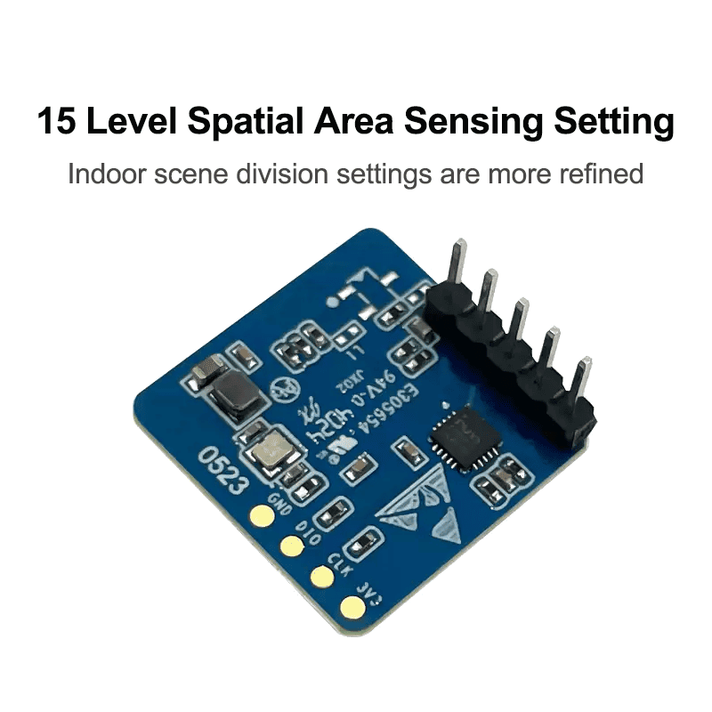
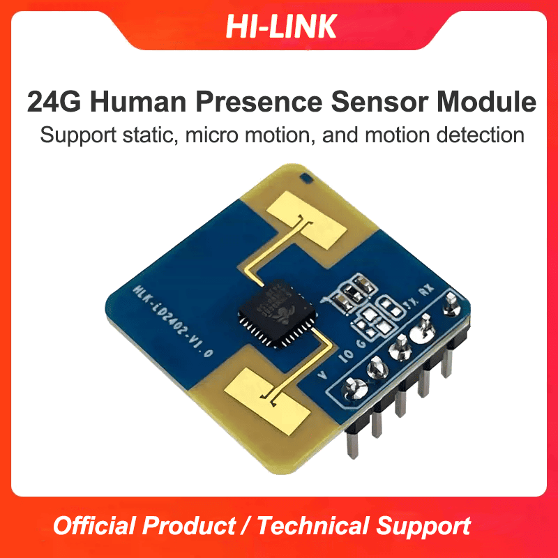
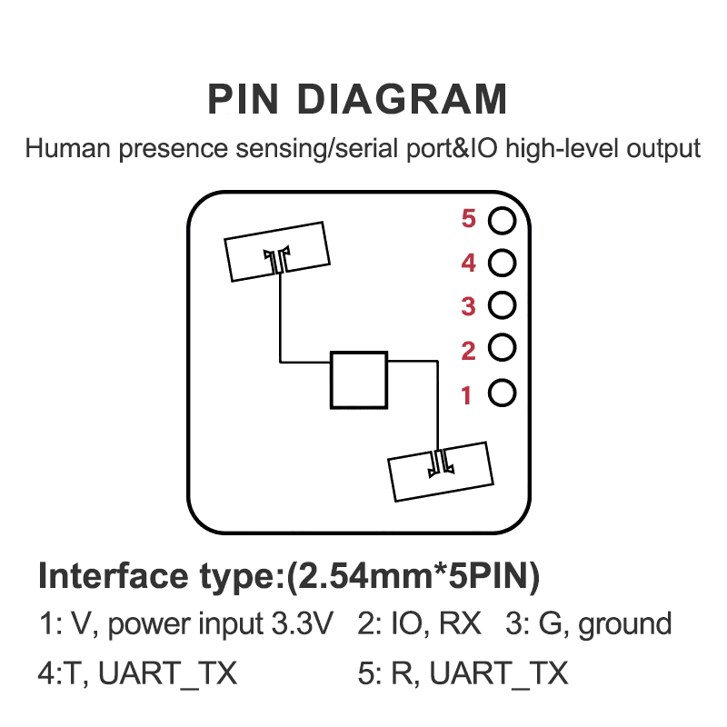
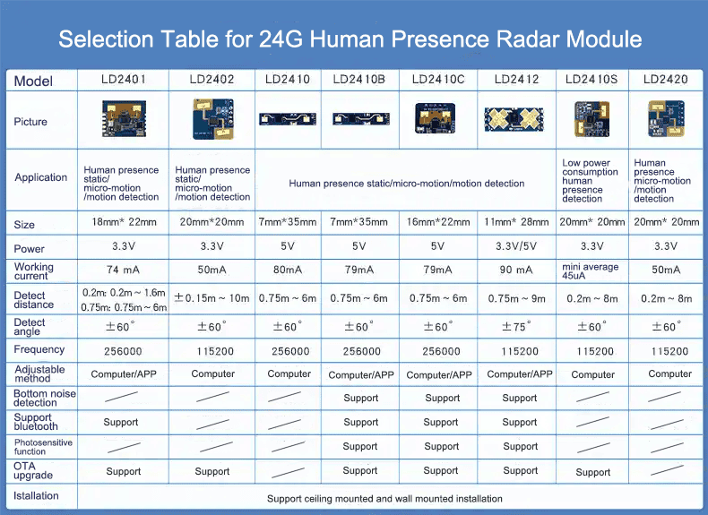

HLK-LD2402 24GHz FMCW 人体存在感应模组，通过 ESPHome 自定义组件无缝接入 Home Assistant —— 存在感知、微动检测、距离测量、32 门能量分析，一应俱全。




单芯片毫米波传感器 SoC，扫频带宽 250MHz，FCC / CE 认证。
运动、微动、存在独立检测，静止人体也能精准感知，0.2m 无盲区。
0.15m 距离分辨率；16 个运动能量门 + 16 个静止能量门，逐区分析。
115200 串口输出与 GPIO 电平输出双接口，即插即用。
平均电流约 50mA，3.3V/5V 宽电压供电，支持挂顶挂壁安装。
入门级价格，提供远超 LD2410 的距离与自动门限生成能力。
命令引擎 + RX 帧状态机重写，消除全部阻塞延迟 —— WiFi / OTA 不再中断。
距离、校准进度、32 门能量、32 门阈值、存在/微动/电源干扰状态全覆盖。
校准、自动增益、保存配置、工程模式、单门阈值设置、恢复出厂，按钮即达。
进入工程模式实时查看 32 个距离门能量与目标距离，调参一目了然。
API 加密、OTA SHA256、web_server v2、ESP8266 内存优化全兼容。
热路径零堆分配、定长数组替代 vector，可用堆从不足 10KB 提升至 30KB+。
| 雷达 | ESP8266 | 说明 |
|---|---|---|
TX | GPIO3 (RX0) | 雷达发送 → ESP 接收 |
RX | GPIO1 (TX0) | ESP 发送 → 雷达接收 |
OUT | GPIO12 | 可选：存在检测 GPIO 输出 |
VCC | 5V | 板载 3.3V 稳压 |
GND | GND | 共地 |
同组件亦支持 ESP32：external_components 无平台限制，仅需按目标板调整引脚。
# external_components 本地引用，离线可编译
external_components:
- source:
type: local
path: components
# 雷达接入 UART0
uart:
tx_pin: GPIO1
rx_pin: GPIO3
baud_rate: 115200
hlk_ld2402:
uart_id: uart_bus
max_distance: 7.0
timeout: 5# 填写 secrets.yaml 后一键编译烧录
$ esphome run my_ld2402.yaml
# 或仅编译
$ esphome compile my_ld2402.yaml烧录后自动出现在 Home Assistant —— 存在、微动、距离、能量门等实体与全部控制按钮即刻可用。